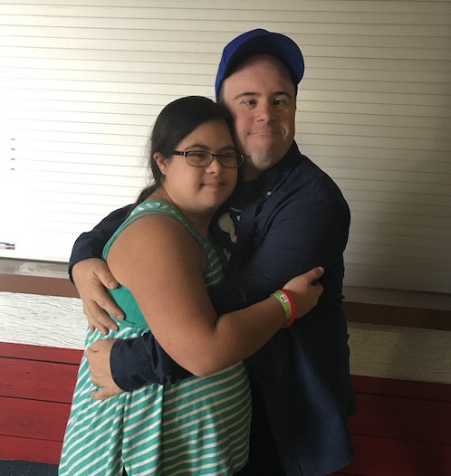

Downsyndrome Dance Program:
Something I feel very strongly about is DownSyndrome Awareness. I believe that everyone should be able to dance and be able to express themselves no matter what physical, emotional, and/or mental challenges they may be dealing with. I have had the oppurtunity and pleasure to work with a Non-Profit Orginization called "Down 4 Dance", a dance program for people with Down Syndrome. The director, Sari Anna Thomas has two studio sites for participants in Long Beach and Orange Country. "Down 4 Dance" recently performed at Angel stadium for the Down Syndrome Awareness walk also known as the "Buddy Walk." In reflection, I felt very proud to be there with my buddies displaying confidence and enjoying the art of movement.
 Down 4 Dance Website